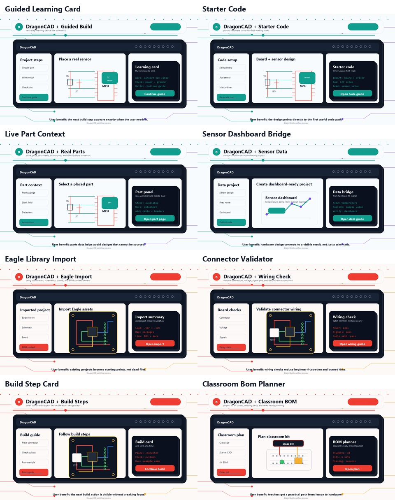
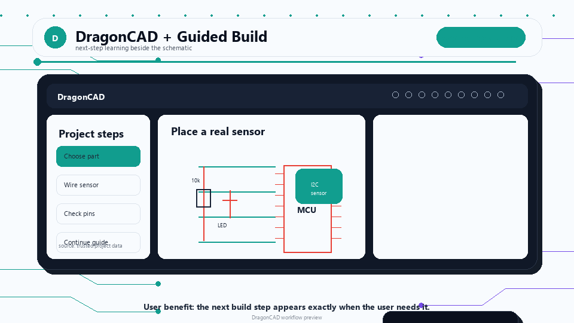
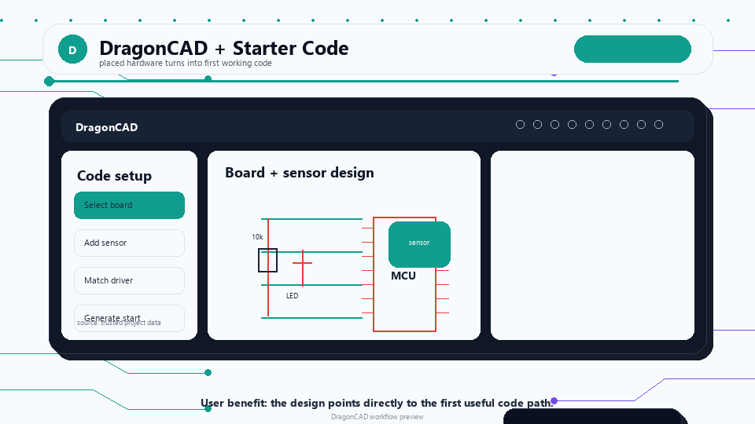
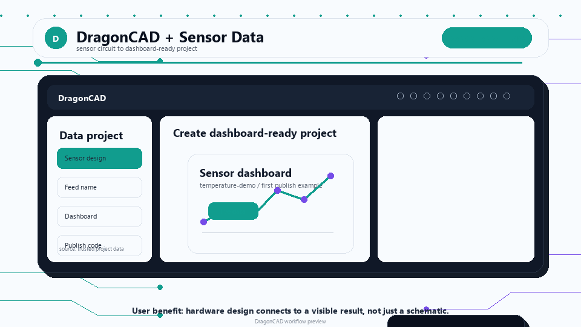
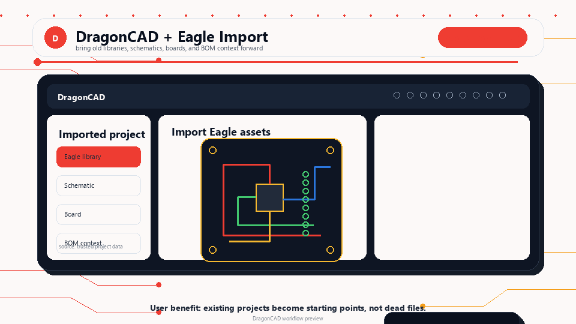
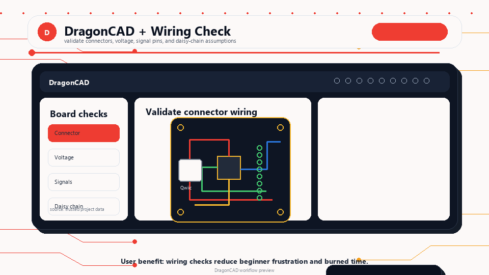
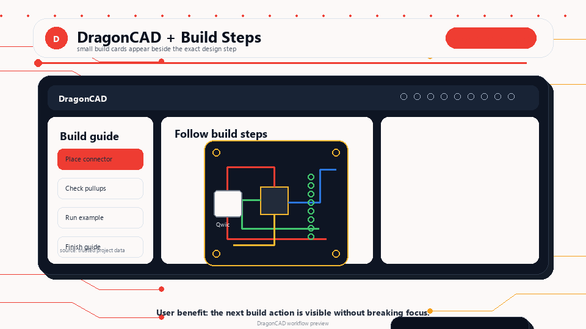
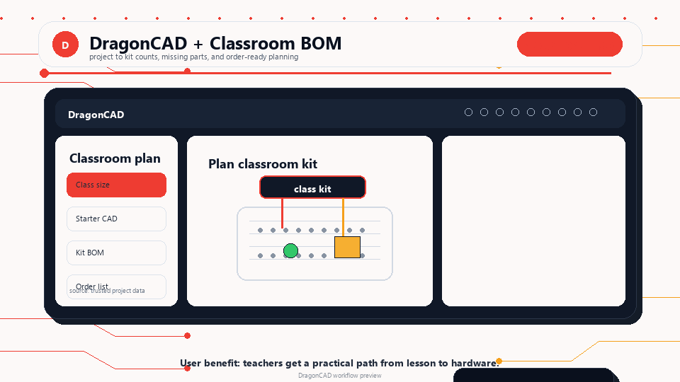

EagleCAD-Compatible Replacement
Bring familiar Eagle libraries, schematics, board assets, and package context into a modern workflow.
Eagle-compatible. Beginner-friendly. Real hardware ready.
A modern CAD workbench for students, makers, and educators that helps you move from schematic to board to code to parts without losing the thread.
What Users Get
Bring familiar Eagle libraries, schematics, board assets, and package context into a modern workflow.
See the next wiring, code, or validation step beside the schematic or board instead of searching in another window.
Connect placed parts to stock, prices, product pages, datasheets, accessories, and substitutions while you design.
Turn a design into a usable parts list, kit plan, sourcing decision, and build checklist.
Design Surface
DragonCAD is the place where you can place a real part, check whether the design is safe, follow the next learning step, and understand what needs to be ordered.

Guided Workflows
Each flow focuses on a common user problem: picking parts, wiring safely, finding the right code, following trusted guides, and getting a project ready to order.
For Sensor and Code Projects
Use guided cards to understand the next step, match hardware to code examples, and keep the whole project moving inside one workbench.

See the next wiring step at the moment you place the part.

Placed hardware reveals the matching driver, bus setup, and first read call.
Check stock, price, guide links, accessories, and product details without leaving the design.

Turn a sensor circuit into a dashboard-ready project with a sample publish flow.
For Boards, Kits, and Classroom Builds
Bring older libraries forward, validate common wiring patterns, and build projects that are ready for real parts and real classrooms.

Reuse old libraries, schematics, boards, BOMs, and documentation context in a modern tool.

Catch voltage, signal, connector, and cable-path problems before ordering or plugging in hardware.

Get a small next-step card when you need it, then continue into the full build instructions.

Move from a project to kit counts, missing parts, BOMs, and order-ready classroom planning.
For Educators
Start with a project, part family, or kit, then move through schematic, board, code, BOM, and build steps.
Keep guide links, product details, and source files visible so students can find the right reference fast.
Reduce the gap between CAD, wiring, code, classroom quantities, and the parts students actually need.
What You Get
DragonCAD is for users who want their CAD tool to understand the parts, the lesson, the code, the board, and the order list. The goal is fewer dead ends between an idea and a working build.